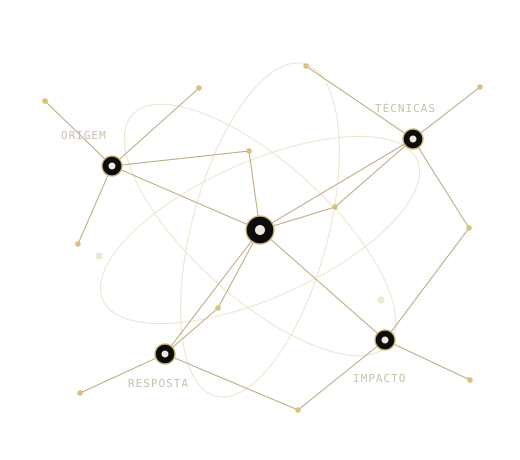
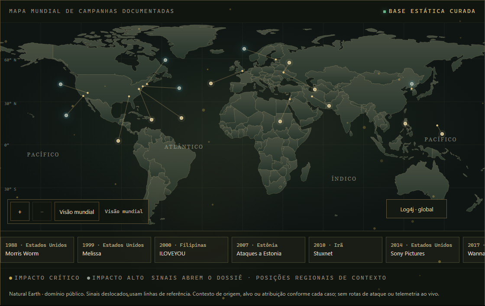

<!doctype html>
<html lang="pt-BR"><head><meta charset="utf-8"><meta name="viewport" content="width=device-width,initial-scale=1"><title>WAR ROOM — composição editável</title>
<style>
*{box-sizing:border-box}html,body{margin:0;background:#0c0d0b;color:#eee9df;font-family:Arial,sans-serif}.poster{width:1080px;height:1350px;padding:78px 80px;position:relative;overflow:hidden;background:linear-gradient(125deg,#0c0d0b,#171a11);display:flex;flex-direction:column}.gold{color:#cbb577}.kicker{font:19px/1.4 monospace;letter-spacing:2px;color:#cbb577;margin:0 0 32px}.brand{font:700 24px/1 Arial,sans-serif;letter-spacing:4px;margin-bottom:48px}.brand span{color:#cbb577}.title{font:700 91px/.99 Georgia,serif;letter-spacing:-4px;margin:0 0 32px;max-width:920px}.cover .title{font-size:164px;line-height:.86;letter-spacing:-7px;position:relative;z-index:1}.cover .title span{display:block}.lede{font:400 39px/1.28 Georgia,serif;max-width:850px;margin:0 0 28px}.body{font:26px/1.5 Arial,sans-serif;color:#c5bfb0;max-width:830px;margin:0 0 24px}.network{width:610px;height:490px;object-fit:contain;position:absolute;right:-30px;top:280px;opacity:.7}.cover .lede{margin-top:318px;max-width:760px;position:relative;z-index:1}.facts{display:flex;gap:44px;margin:26px 0;border-top:1px solid #615435;border-bottom:1px solid #615435;padding:22px 0}.facts strong{display:block;color:#d5c395;font:700 47px/1.15 Georgia,serif}.facts span{font:19px/1.4 monospace;color:#bbb4a6}.footer{margin-top:auto;border-top:1px solid #615435;padding-top:24px;display:flex;justify-content:space-between;gap:20px;align-items:end;font:19px/1.4 Arial,sans-serif;color:#bbb4a6}.footer b{font-weight:400;color:#d5c395}.chapters{display:grid;grid-template-columns:1fr 1fr;gap:30px 36px;margin:26px 0 34px}.chapter{border-top:1px solid #615435;padding-top:20px}.chapter strong{font:400 32px/1.2 Georgia,serif;color:#e9dfc9;display:block;margin-bottom:12px}.chapter span{font:22px/1.4 Arial,sans-serif;color:#bbb4a6}.shot{display:block;width:100%;height:445px;object-fit:cover;object-position:center;margin:18px 0 26px;border:1px solid #615435}.shot-note{font:18px/1.4 monospace;color:#b5ac98;margin:0 0 28px}.statement{font:400 49px/1.18 Georgia,serif;color:#d5c395;border-left:2px solid #cbb577;padding-left:28px;margin:54px 0 40px}.voice-art{height:230px;display:flex;align-items:center;gap:13px;margin:16px 0 40px;border-top:1px solid #615435;border-bottom:1px solid #615435;overflow:hidden}.voice-art i{width:9px;background:#cbb577;display:block;flex:1;max-width:13px;opacity:.8}.url{font:700 36px/1.35 Arial,sans-serif;color:#eee9df;letter-spacing:-.4px;margin:22px 0;overflow-wrap:anywhere}.cta{display:inline-block;background:#cbb577;color:#10110d;padding:24px 32px;font:700 26px/1.2 Arial,sans-serif;align-self:flex-start;margin-top:16px;text-decoration:none}.profiles{font:22px/1.6 Arial,sans-serif;color:#bbb4a6;margin:24px 0}.story{height:1920px;padding:260px 90px 355px}.story .title{font-size:172px}.story .cover .lede{margin-top:0}.story .network{top:550px;width:900px;right:-180px;height:700px}.story .lede{font-size:47px;margin-top:370px}.story .body{font-size:30px}.story .footer{font-size:22px}.story .url{font-size:37px}.story .cta{margin-top:22px}.story-link .title{font-size:103px}.story-link .lede{margin-top:35px;font-size:46px}.story-link .network{position:relative;top:auto;right:auto;width:720px;height:450px;margin:0 auto;opacity:.9}.landscape{width:1200px;height:627px;padding:52px 60px}.landscape .brand{font-size:20px;margin-bottom:12px}.landscape .kicker{font-size:16px;margin-bottom:20px}.landscape .title{font-size:92px;letter-spacing:-4px;margin-bottom:16px}.landscape .lede{font-size:30px;max-width:650px;margin:0 0 18px}.landscape .body{font-size:20px;max-width:620px;margin-bottom:16px}.landscape .network{width:440px;height:420px;top:110px;right:20px;opacity:.85}.landscape .footer{font-size:17px;padding-top:12px}.landscape .url{font-size:21px;margin:0;color:#d5c395}.landscape .title span{display:inline}.landscape .facts{gap:34px;padding:13px 0;margin:12px 0;width:620px}.landscape .facts strong{font-size:30px}.landscape .facts span{font-size:15px}
.story.cover .network{top:600px;width:680px;height:400px;right:0}</style></head><body><main class="poster" id="poster"></main>
<script>
const q=new URLSearchParams(location.search),kind=q.get('kind')||'feed',slide=Number(q.get('slide')||1),url='https://edy075.github.io/WAR_ROOM/';
const brand='<div class="brand"><span>WAR</span> ROOM</div>',footer='<footer class="footer"><span>Edmilson Gomes<br><b>Cyber Threat Intelligence</b></span><span>edy075.github.io/WAR_ROOM/</span></footer>',art='',facts='<div class="facts"><div><strong>17</strong><span>dossiês</span></div><div><strong>102</strong><span>capítulos</span></div><div><strong>42 min</strong><span>de narração</span></div></div>';
const slides=[
  '<p class="kicker">ARQUIVO DOCUMENTAL · EDIÇÃO 2026</p><h1 class="title">WAR<span class="gold">ROOM</span></h1>'+art+'<p class="lede">O impacto é real.<br>A investigação começa aqui.</p><p class="body">Histórias de conflitos e incidentes cibernéticos, com contexto e fontes públicas.</p>'+facts,
  brand+'<p class="kicker">LEITURA DOCUMENTAL</p><h1 class="title">Cada caso.<br><span class="gold">Seis perspectivas.</span></h1><p class="body">Um percurso completo para compreender o que aconteceu — e por que importa.</p><div class="chapters">'+[['Abertura','O evento e sua dimensão.'],['Origem','Contexto, atores e atribuições.'],['Propagação','Como a campanha se espalhou.'],['Impacto','Consequências e limites das evidências.'],['Resposta','Contenção, recuperação e lições.'],['Fontes','Referências para aprofundar a investigação.']].map(c=>'<div class="chapter"><strong>'+c[0]+'</strong><span>'+c[1]+'</span></div>').join('')+'</div><p class="body">Resumo, História, Análise, Mídia e Fontes reunidos no mesmo dossiê.</p>',
  brand+'<p class="kicker">INVESTIGAÇÃO VISUAL</p><h1 class="title">Conecte contexto.<br><span class="gold">Explore o mapa.</span></h1><p class="body">Combine busca, filtros, geografia e cronologia para encontrar seu próximo caso.</p><p class="shot-note">INTERFACE REAL · BASE HISTÓRICA 1988–2025</p><p class="body">A posição representa contexto regional. Atribuições e relações exigem leitura das fontes de cada dossiê.</p>',
  brand+'<p class="kicker">EPISÓDIOS NARRADOS</p><h1 class="title">Leia no seu ritmo.<br><span class="gold">Ouça se preferir.</span></h1><div class="voice-art" aria-label="Ilustração editorial de áudio; não é forma de onda de uma gravação">'+Array.from({length:48},(_,i)=>'<i style="height:'+(28+Math.abs(Math.sin(i*1.7)*Math.cos(i*.31))*182)+'px"></i>').join('')+'</div><p class="lede">17 episódios completos.<br>102 áudios de capítulo.</p><p class="body">Síntese autorizada baseada na voz de Edmilson Gomes. Cerca de 42 minutos no conjunto dos episódios completos.</p><p class="body">Áudio opcional, carregado sob demanda. A leitura e as referências permanecem disponíveis.</p>',
  brand+'<p class="kicker">COMECE A INVESTIGAÇÃO</p><h1 class="title">Entre no<br><span class="gold">WAR ROOM.</span></h1><p class="statement">Da origem ao impacto.<br>Da narrativa às fontes.</p><p class="body">17 dossiês, um arquivo para explorar. Abra no desktop ou no celular.</p><p class="url">edy075.github.io/WAR_ROOM/</p><a class="cta" href="'+url+'">Explorar o arquivo</a><p class="profiles">Projeto de Edmilson Gomes<br>GitHub: EDY075 · Instagram: @edmilson_zn_</p>'
];
const el=document.getElementById('poster');
if(kind==='linkedin'){el.classList.add('landscape');el.innerHTML=brand+'<p class="kicker">PORTFÓLIO · CYBER THREAT INTELLIGENCE</p><h1 class="title">WAR <span class="gold">ROOM</span></h1>'+art+'<p class="lede">O impacto é real.<br>A investigação começa aqui.</p>'+facts+'<p class="body">História, análise e fontes públicas em uma experiência documental interativa.</p>'+footer;}
else if(kind==='story'){el.classList.add('story');if(slide===1){el.classList.add('cover');el.innerHTML='<p class="kicker">ARQUIVO DOCUMENTAL · EDY</p><h1 class="title">WAR<span class="gold">ROOM</span></h1>'+art+'<p class="lede">17 dossiês.<br>Histórias para investigar.</p><p class="body">102 capítulos e episódios narrados.<br>Leitura completa no seu ritmo.</p><p class="url">edy075.github.io/WAR_ROOM/</p>'+footer;}else{el.classList.add('story-link');el.innerHTML=brand+'<h1 class="title">Sua próxima<br><span class="gold">investigação.</span></h1>'+art+'<p class="lede">Explore o mapa.<br>Escolha um caso.<br>Aprofunde nas fontes.</p><p class="url">edy075.github.io/WAR_ROOM/</p><a class="cta" href="'+url+'">Abrir WAR ROOM</a>'+footer;}}
else{if(slide===1)el.classList.add('cover');el.innerHTML=slides[Math.max(0,Math.min(4,slide-1))]+footer;}
window.posterReady=true;
</script></body></html>
